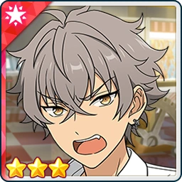
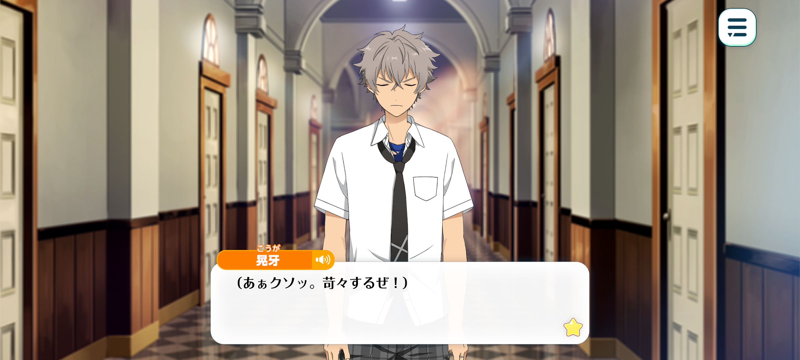
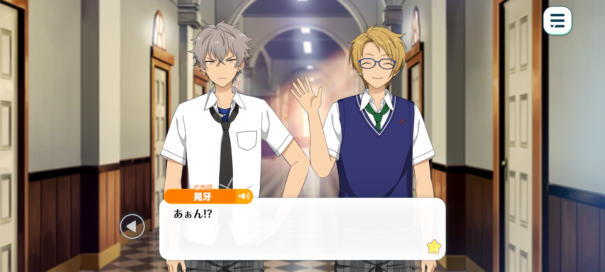
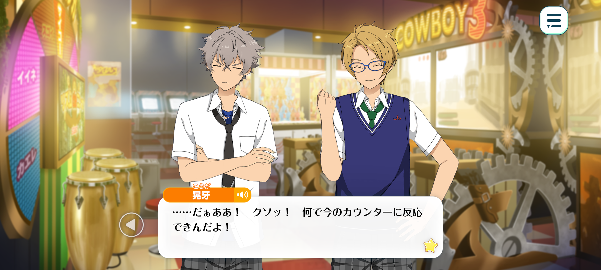
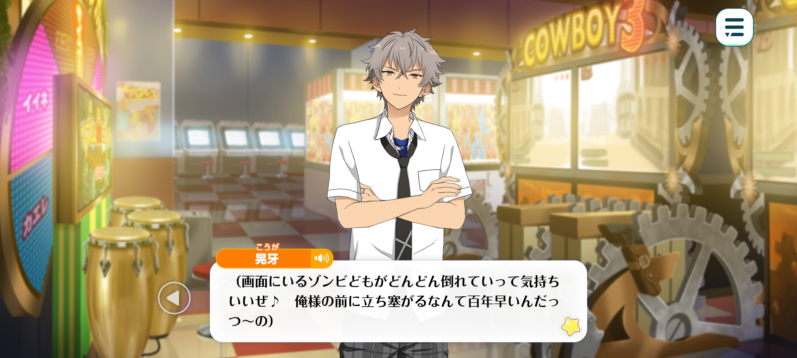

Amusement Wolf
Idol Story


Season: Summer

Koga: (Gahh, for fuck’s sake. I’m pissed!)
(Why the hell are Sakuma-senpai and Hakaze-senpai appearin’ on some variety show?!)
(We’re UNDEAD! We’re suppose t’be a more radical, immoral unit!)
(Feels like the fangs we've sharpened as UNDEAD have been getting dull lately.)
(...Those shitty seniors. I'm sure they've got their reasons, even if I don’t get them at all.)
(They take on a job like that, and now all these people on the sidelines think they can run their mouths about us. I'm not mature enough to just sit back and take that shit without saying anything...!)
(Dammit! I was gonna take out all this frustration by going all out on my guitar and letting it all pour out through the music!)
(And of all days, Adonis has Track and Field club...)
(Can't really do anything about that, so I figured I'd play some guitar by myself, but I just can't get into it...)
Tch. Should I just call it quits and head home?

Makoto: Heyyy, Oogami-kun! Heading home? The Light Music Club isn't meeting today, huh~?
Koga: Haa!?
Makoto: Eek...!? S-Sorry! Looks like I caught you at a bad time, huh?
Koga: Great. It's Four Eyes. What d'you want?
Makoto: Oh, nothing! I just happened to see you, so I thought I'd come say hello.
Koga: Then don't come talkin' to me if you haven't got anything to say!
Oi, Four Eyes! Can't you tell I'm in a bad mood?!
Makoto: Y-Yeah... I can tell...
Koga: Then hurry up and tell me how to blow off some steam!
Makoto: Eeh, this is sudden!?
Koga: Just answer the damn question!
Makoto: U-Um, uhhh... Maybe you could eat lots of delicious food? Or get some sleep and forget about whatever's bothering you?
Koga: You think THAT'S gonna make me feel any better?! Put a little more thought into it!
Makoto: I-I am taking this seriously, you know~. Well, what about running a lap around the school grounds? I've heard exercise can help clear your head...
Koga: But I'd just get in the way of the other clubs!
Makoto: Oh, so you actually do worry about things like that...
Then, um... Oh! How about going to the arcade? You like card games and stuff, don't you?
Koga: …The arcade?
Hm, that ain’t half bad, Four Eyes ♪
Makoto: I'm glad! Looks like you like that suggestion!
Koga: Yeah, I do. C'mon, let's go!
Makoto: Huh? Go where…?
Koga: Dude, didn't we just agree we're goin' to the arcade?
Makoto: Y-You want me to come with you...?
Koga: You're the one who suggested it! So take responsibility and come with me! What, got somewhere else you need to be?!
Makoto: N-No! I was just going home! Besides, I don't even have my bag with me...
Koga: Then go and fuckin’ get it! Quick, chop chop!
Makoto: Eeeeeh~!? How did I end up getting dragged into this?!

Makoto: Yippee~! I win ♪.
Koga: ...GAAAH! Dammit! How the hell'd you react fast enough to block my shot?!
Makoto: Fufu. I figured you’d hit the puck there.
Koga: There's no way you could've predicted that~...
More importantly, I came here to blow off some steam, so why the hell are YOU the one winning?!
Stress relief, my ass! This is just pissing me off even more!
Makoto: Eeeh~!? S-Sorry! I'll go easy on you next round...
Koga: HAAH!? I'm not so pathetic that you need to go easy on me!
Makoto: Th-Then what am I supposed to do~!?
Koga: Shitty game... It's annoyin' how close the score was, too...
Makoto: Right? If I'd let my guard down even a little, I probably would've lost. I had no idea you were so good at air hockey, Oogami-kun!
Koga: ...Doesn't mean much comin' from the guy who just beat me.
Makoto: Gahh. Don’t look at me like that...
Anyway, let's put that behind us and try a different game! There's loads of other stuff to play here, after all!
Koga: Fair enough. Got any recommendations?
Makoto: Hmm, let's see... A game that's good for two players...
If we play something competitive, there'll be a winner and a loser, and that might put Oogami-kun in an even worse mood... So we'd be better off playing a co-op...
Koga: Huh? What did you just say?
Makoto: Nothing, I said nothing!
R-right! How about a zombie shooting game?!
Koga: Heh, sounds good. Just don’t go holdin’ me back, got it?
Makoto: Leave it to me! I've got your back, Oogami-kun! ♪
I’ll put the money in and… let’s play!
Koga: Got your gun? I’m gonna focus on the small fries ‘n then we can rush the boss!
Makoto: Got it! Oh, just be careful not to hurt any civilians.
Koga: Ha! Who d’you think you’re speakin’ to!
Makoto: Ahaha, that's true. It's reassuring having you around! Then, I'll just...!
Koga: (Four Eyes keeps landin’ headshots...! I can't let him show me up!)
Makoto: Oogami-kun! Coming from above!

Koga: I got it~!
(Man, it feels great watching all those zombies go down like dominoes ♪. You lot ain't even close to being a match for me!)
(...Come to think of it, when was the last time I hung out with someone at an arcade like this...?)
(Maybe ‘cos I’m gettin’ so into the game, I’m not feeling as angry.)
(I still don't get why Sakuma-senpai and Hakaze-senpai are appearing on that show, but if I keep getting worked up over it, I'm just gonna cause trouble for Adonis.)
(I can’t help gettin’ angry about it but, like today, it’s important I find a way t’let it all out.)
(I owe Four Eyes one... ♪)
Makoto: …Dangit. Oogami-kun, reload, reload!
Koga: Haa?
…AhhhH! When did my health get so low!?
Makoto: My bad! They surrounded us, and I couldn't fend them all off...
Uwaa!?
I’m dead. Guess that’s game over.
Koga: Oi! What the hell are you giving up for?! We can just continue from where we left off!
Let’s go again, Four Eyes! We won’t lose next time~!
Makoto: Ahaha. You’re really into this ♪.
Koga: Hell yeah I am! We ain’t goin’ home today until we beat this game, alright!? Get ready ♪.